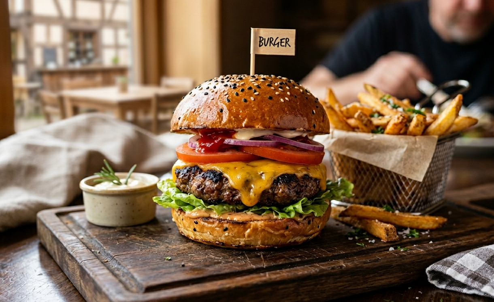

CHEESEBURGER WITH FRENCH FRIES
Home

This gourmet cheeseburger centered on a toasted brioche bun sprinkled with black and white sesame seeds, the thick,
grilled beef patty is draped in melted cheddar cheese, with layers of crisp green lettuce, ripe tomato slices, red onion,
ketchup, and mayonnaise creating an irresistible stack. A miniature wooden flag labeled "BURGER" marks this masterwork.
Served alongside is a generous portion of golden, herb-dusted French fries in a wire mesh basket, presented on
wax paper, with a small ceramic ramekin of creamy rosemary-aioli for dipping.
INGREDIENTS
For the Patty:
- 200 g (7 oz) high-quality ground beef (80/20 mix)
- Salt and freshly ground black pepper to taste.
For the Bun & Toppings:
- 1 brioche bun with sesame seeds
- 1 tablespoon butter
- 1 thick slice of sharp cheddar cheese
- Crisp green leaf lettuce
- 2 ripe tomato slices
- Thinly sliced red onion
- Ketchup and mayonnaise
For the Rosemary-Aioli:
- 2 tablespoons mayonnaise
- 1 teaspoon fresh rosemary, finely chopped
- 1 clove garlic, minced
For the French Fries:
- 2 large russet potatoes, cut into thick fries
- Oil for frying
- Salt and chopped fresh parsley for seasoning
Optional: Rosemary sprigs for garnish
STEPS
- Prepare for Fries:
Peel and cut the potatoes into thick fries. Soak them in cold water for
30 minutes, then drain and pat very dry. Heat oil in a deep fryer to 180°C (350°F). In a separate bowl, mix
the mayonnaise, minced garlic, and chopped rosemary to make the aioli.
- Form the Patty:
Season the ground beef with salt and pepper. Gently form it into a round
patty slightly wider than the bun. Make a slight indentation in the center with your thumb (to prevent doming).
- Toast the Bun:
Slice the brioche bun in half. Spread the insides with butter and toast them,
cut-side down, in a non-stick pan until golden brown and warm. Set aside.
- Grill the Patty:
Cook the beef patty on a grill or in a hot cast-iron skillet over
medium-high heat for about 3 to 4 minutes per side (for medium-rare). In the last minute, place the cheddar
cheese slice on top of the patty and cover the pan briefly until melted.
- Fry the Fries:
Carefully add the dry potatoes to the hot oil. Fry until they are golden brown
and crispy (about 4 to 5 minutes). Drain on paper towels and immediately toss with salt and fresh parsley.
- Assemble the Burger:
Spread ketchup and mayonnaise on the toasted bottom bun. Layer the
lettuce and tomato slices, then place the cheeseburger patty on top. Add the sliced red onion and secure the
top bun with a toothpick and flag.
- Serve:
Place the burger on a wooden cutting board with the basket of hot fries and the bowl
of rosemary-aioli. Garnish with a fresh rosemary sprig.